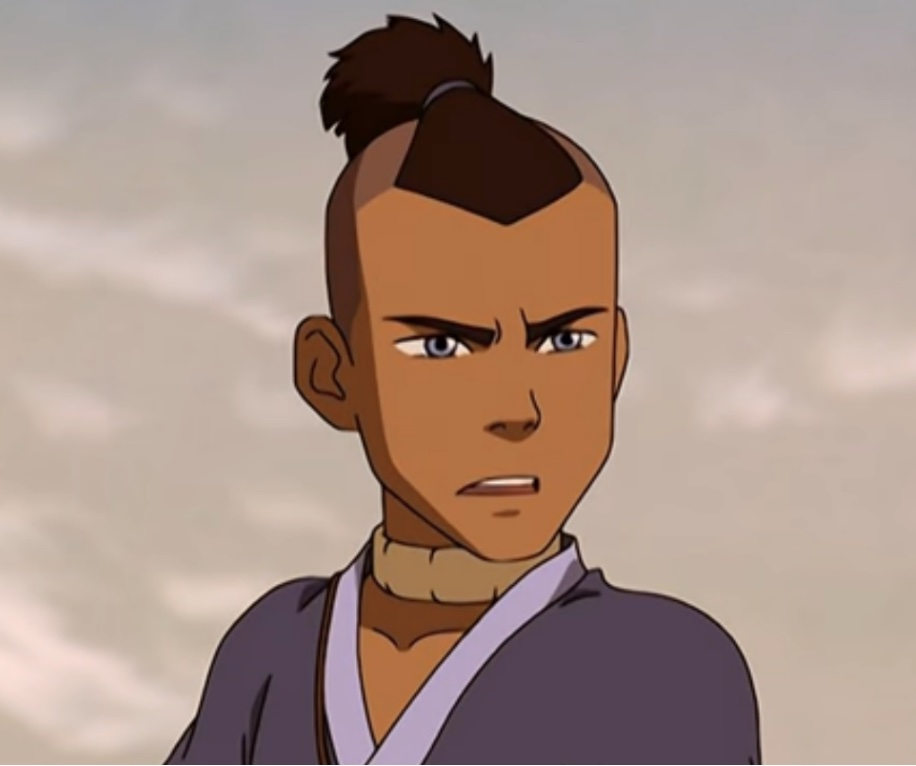

Avatar the Last Airbender (ATLA) is about Aang, the avatar, and his friends' journey to defeat the Fire Lord and end the war that the Fire Nation started. In the world of avatar people can bend one of the four elements: air, water, earth, fire; and the avatar is the one person with the ability to bend all four elements. The nations are split up based on elements, and the Fire Nation started a war in an attempt to take over the other three nations. Aang was the avatar when the war started, but then he disappeared. 100 years later Katara and Sokka, siblings from the Southern Water Tribe, found Aang frozen in ice. The three of them then made it their mission to get Aang trained in all four elements so that they can defeat Fire Lord Ozai. Aang is an airbender and mastered it before he was frozen, so he still had to learn waterbending, earthbending, and firebending.
My favorite character in ATLA is Zuko. He is a member of the Fire Nation, and over the course of the show he goes from trying to capture the avatar to becoming friends with him. Zuko was banished from his home after accidentally disrespecting his father in a war meeting, and then refusing to fight him. He spends about three years trying to capture Aang in an attempt to regain his honor and father's approval, but then he realizes that that isn't really what he wants in life. He goes through a lot of internal struggles through out the show, and I love watching his character development.
Photo found on the ATLA Fandom page
My second favorite character is Sokka. He is a member of the Southern Water Tribe, and is the only non-bender of the main group. Ever since he was a little kid Sokka wanted to become a great warrior like his dad, and by the end of the show he acheives his goal. He becomes the "idea guy" of the group, and proves time and time again that he is a great leader. He is also skilled with a boomerang, and becomes a master swordsman.

Photo from The Daily Fandom
My third favorite character is Toph. Toph is an earthbender, and also happens to be blind. She uses her mastery in earthbending to help her see, and discovers/invents metalbending. She joined the main group and taught Aang earthbending after she ran away from home because her parents were being overprotective due to her disability.
Photo found on the ATLA Fandom page

{kind=link}

{kind=link}